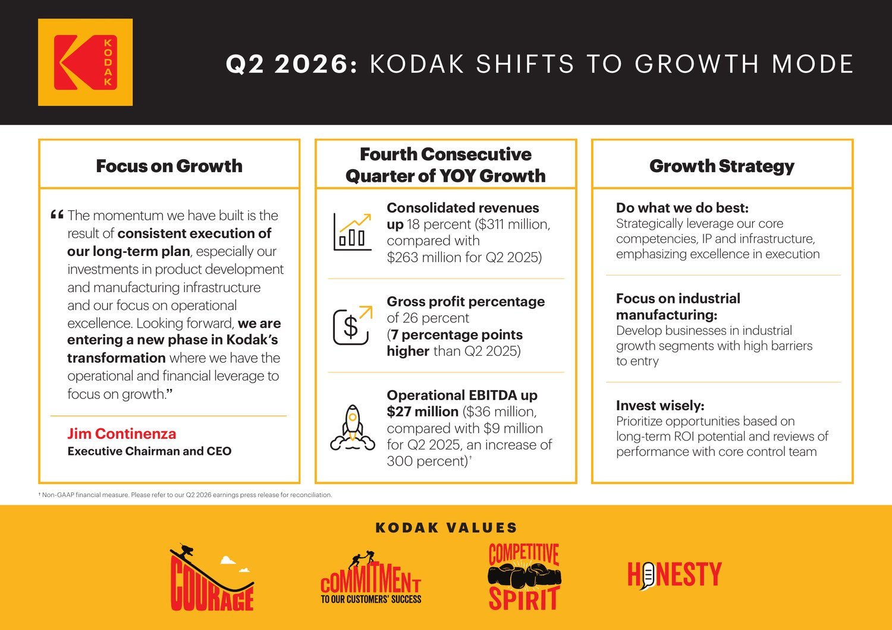
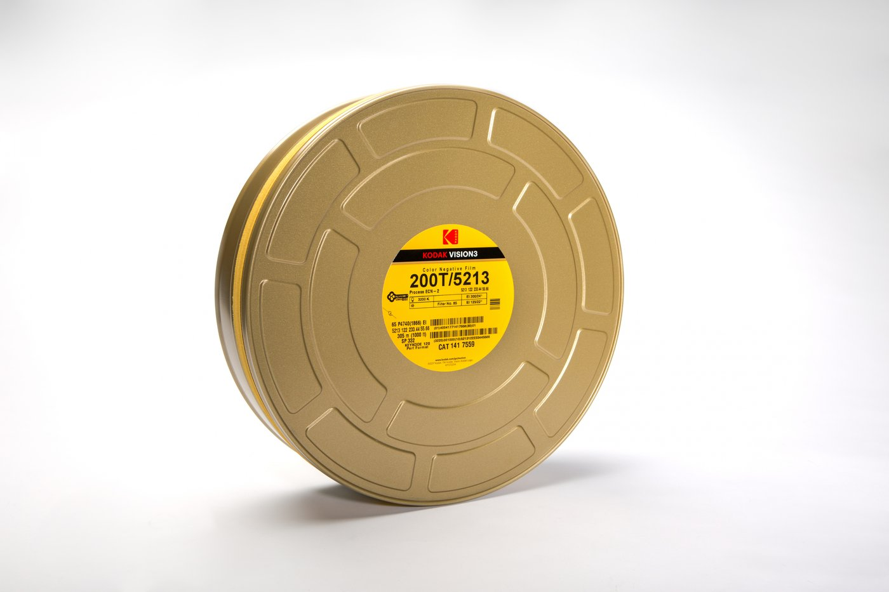
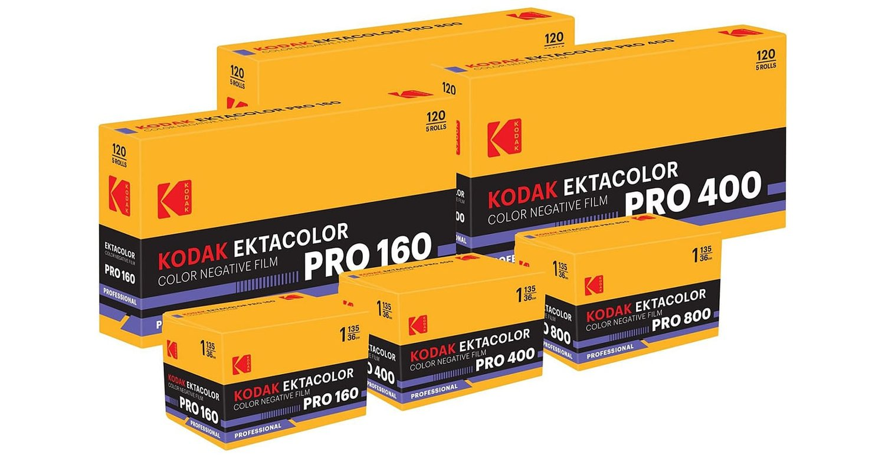

한 해 전만 해도 코닥의 존속을 걱정하는 기사가 나왔다. 2026년 2분기 실적표에는 다른 숫자가 적혀 있다. 네 분기 연속 개선이다.
숫자부터
| 2026년 2분기 | 전년 동기 | 올해 | 변화 |
|---|---|---|---|
| 매출 | 2억 6,300만 | 3억 1,100만 | +18% |
| 총이익 | 5,100만 | 8,200만 | +61% |
| 순이익 (GAAP) | -2,600만 | 1,700만 | 흑자 전환 |
| 영업 EBITDA | 900만 | 3,600만 | +300% |
단위는 미국 달러다. 총이익이 매출보다 세 배 빠르게 늘었다. 파는 양이 늘었고 남기는 폭도 함께 넓어졌다.

필름은 어느 칸에 있나
코닥의 부문은 크게 둘로 갈린다. 영화필름과 화학·소재가 든 Advanced Materials and Chemicals, 그리고 인쇄 장비와 소모품을 파는 Print 다.
| 부문 | 매출 | 증가 | 비중 |
|---|---|---|---|
| Advanced Materials and Chemicals | 1억 500만 | +40% | 34% |
| 1억 9,500만 | +10% | 63% |
필름이 든 쪽이 40% 늘었다. 코닥은 영화필름 수요가 강했다고 밝혔고, 여기에 제약과 배터리 코팅 투자가 함께 잡혔다.
즉 이 40% 가 전부 필름은 아니다. 코닥은 부문 안을 더 쪼개 공개하지 않는다. 필름이 얼마나 벌었는지 정확한 액수를 알 방법은 지금 없다.

그런데 절반 이상은 인쇄다
여기가 이 실적을 읽을 때 놓치기 쉬운 자리다. 3억 1,100만 중 1억 9,500만, 63% 가 Print 다. 필름이 든 부문은 3분의 1이다.
필름이 코닥을 살렸다고 말하기에는 아직 인쇄 쪽이 훨씬 크다. 성장률로 보면 필름 쪽이 빠르고, 규모로 보면 인쇄 쪽이 회사를 떠받친다. 두 문장 다 맞다.
인쇄 시장이 성장하는 시장이 아니라는 점도 같이 봐야 한다. 그 부문이 흔들리면 필름의 40% 성장으로 메우기 어렵다.
필름 쓰는 사람에게 무엇이 달라지나
실적이 좋아지면 설비에 돈을 넣을 여유가 생긴다. 지난 한 해 코닥이 한 일을 보면 그 방향이 보인다. 알라리스가 맡아 오던 스틸 필름 유통을 이스트만 코닥이 직접 회수했고, 대형 포맷과 100피트 벌크롤까지 라인업에 되돌렸다.

회사가 버는 것과 우리가 사는 필름의 가격이 곧바로 이어지지는 않는다. 다만 만드는 쪽이 흔들리지 않는 편이 사는 쪽에도 낫다.
이 글이 하지 않은 것
- 회사 발표 자료를 근거로 삼았다. 낙관적인 쪽으로 정리된 수치라는 점을 감안하시기 바란다
- 필름만 떼어 낸 매출은 공개되지 않았다. 부문 단위까지만 말할 수 있다
- 한 분기는 한 분기다. 네 분기 연속이라 해도 한 해를 넘긴 흐름은 아니다